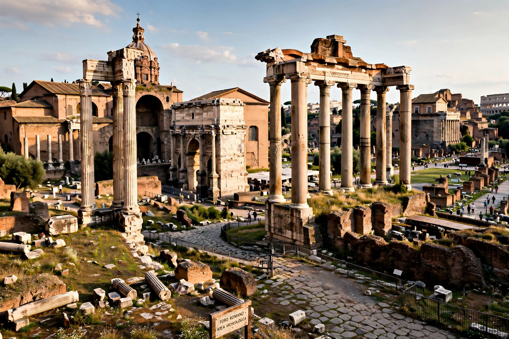

The tribune of the plebs (Latin: tribunus plebis) was a magistracy of the Roman Republic created to protect the interests of the plebeians against the patrician-dominated Senate and magistrates. The office emerged from the Conflict of the Orders, traditionally dated to 494 BC and the first secession of the plebs.
Tribunes were sacrosanct: their persons were legally inviolable, protected by a sacred oath of the plebs. They held the ius auxilii, the right to aid any plebeian against a magistrate; the power of intercessio, a veto over acts of magistrates and the Senate; and the right to convene the Plebeian Council and propose plebiscites, which after the Lex Hortensia (287 BC) bound the whole people.
Initially two (later ten) tribunes were elected annually by the plebeians. The office became a platform for reforming politicians, most famously the brothers Tiberius and Gaius Gracchus in the late second century BC, whose tribunates ended in political violence. Sulla curtailed the tribunate; it was later restored. Under the Empire, emperors assumed tribunicia potestas (tribunician power) as one of the foundations of their authority.
The tribunate is an early institutional example of a negative, checking power within a constitution, and the word "tribune" survives as a term for a champion of the people.